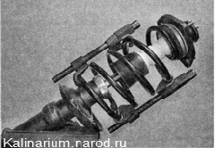
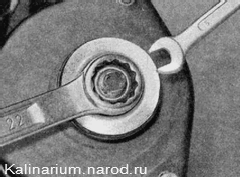
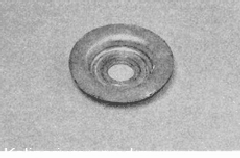
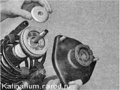
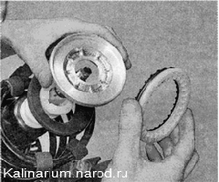
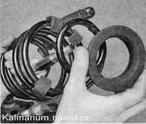
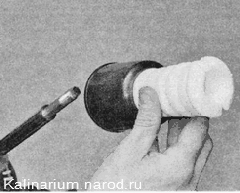

Разборка и сборка амортизационной стойки передней подвескиДля выполнения работы потребуются: — стяжки для пружин подвески; — приспособление для разборки стойки подвески. Разборка 1. Снимаем стойку с автомобиля. 2. Зажимаем стойку в тисках. Внимание! Соблюдайте осторожность! Сжатая пружина обладает большой силой и при срыве стяжки, распрямляясь, может нанести травму 3. Устанавливаем с противоположных сторон пружины стяжки и равномерно, без перекосов, стягиваем пружину до снятия нагрузки с верхней чашки пружины.  4. Удерживая ключом на 9 мм шток амортизатора от проворачивания, ключом на 22 мм отворачиваем его гайку. 
5. Снимаем со штока стойки oгpaничительную шайбу верхней опоры хода отбоя. 6. Снимаем со стойки верхнюю опору и ограничительную шайбу верхней опоры хода сжатия.  7. Снимаем со стойки подшипник и верхнюю чашку пружины. 8. Снимаем с верхнего витка пружины резиновую прокладку. Снимаем пружину со стойки (не ослабляя стяжки).  9. Снимаем буфер хода сжатия и защитный кожух штока амортизатора. 10. Для замены пружины ослабляем стяжки пружины. Сборка Собираем стойку передней подвески в обратной последовательности. Перед сборкой стойки, рукой полностью выдвигая и утапливая шток, убедитесь в исправности амортизатора. Если при перемещении штока чувствуются провалы, рывки или слышны посторонние звуки, замените амортизатор. Проверьте целостность и исправность всех устанавливаемых на стойку элементов. Замените поврежденный или потрескавшийся защитный кожух штока амортизатора, поврежденный отбойник хода сжатия, треснувшую или ослабленную пружину подвески. Пружины передней подвески по жесткости делятся на классы. Класс пружины обозначается краской на наружной стороне одного из ее витков. В передней подвеске должны быть установлены пружины одного класса. |